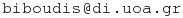

My name is Aggelos Biboudis (Άγγελος Μπιμπούδης in Greek) and I’m a PhD student and member of the PLaST research group at the Dept. of Informatics and Telecommunications, University of Athens, under the supervision of Yannis Smaragdakis since July 2012.
You can contact me on LinkedIn and via email. You can find bits of my work under my Github page. I tweet about PL, computer science and geek stuff @biboudis.

Interests
- Modular extensibility
- Metaprogramming
- Staging
- Streams
Committees
Research
- Programming Languages: I currently work on program
generators, modular type systems and streams.
- A. Biboudis, N. Palladinos, G. Fourtounis and Y. Smaragdakis, "Streams à la carte: Extensible Pipelines with Object Algebras", ECOOP'15 (slides, code, video, bib)
- V. Ureche, A. Biboudis, Y. Smaragdakis, M. Odersky, "Automating Ad hoc Data Representation Transformations", OOPSLA'15
- A. Biboudis, G. Fourtounis and Y. Smaragdakis, "jUCM: Universal Class Morphing (position paper)", MASPEGHI'15 (slides)
- A. Biboudis and E. Burmako, "MorphScala: Safe Class Morphing with Macros", SCALA'14
- A. Biboudis, N. Palladinos and Y. Smaragdakis, "Clash of the Lambdas", ICOOOLPS'14 (slides, code)
- P. Gerakios, A. Biboudis, and Y. Smaragdakis, "Reified Type Parameters Using Java Annotations", GPCE'13 (slides, poster)
- P. Gerakios, A. Biboudis, and Y. Smaragdakis, "Forsaking Inheritance: Supercharged Delegation in DelphJ", OOPSLA'13
- Computer Vision: I worked on the research and
development
for mobiXeyes,
a real-time stereo-vision algorithm for telemetry of a
high speed moving object (ball) in tennis sports.
- O. Sekkas, V. Tsetsos, A. Biboudis, E. Zervas, N. Silvestros, S. Hadjiefthymiades, A. Batistakis, "MobiXeyes: Real-time Stereo Vision Technology for Racket Sports", APCST'15
- Wireless Sensor Networks
- E. Zervas, A. Biboudis, C. Anagnostopoulos, O. Sekkas, and S. Hadjiefthymiades, "Multisensor data fusion for fire detection"